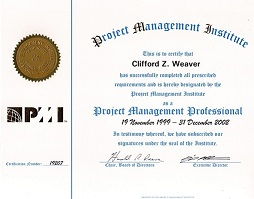
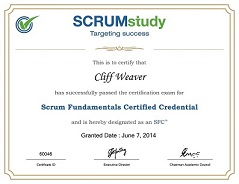
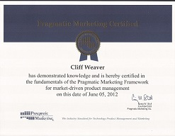

I have been studying and certifying in a range of subjects for many years. I beleive I was an early adopter of self-study when Microsoft started to offer courses on-line in the 1990s. I have been cerfied many, many time by Microsft. So much listing all of them would be quite an exercise. Therefore, below I provide a link to my transcript. I do not know why, but my most recent certification - Microsoft Data Science Professional Certification - in not on this list. I beleive this is because the transcript covers all the Microsoft Certified Professional (MCP) certifications where the Data Science certification was provided by Microsoft Academy. No matter, the Data Science Profession Certification is listed here where a link is provided to prove this accomplishement.
Microsoft MCP History
Microsoft MCP TranscriptThe transcript reflects that I have been an MCP, MCSE many times of ther years.
Project Management Institute
 "I was certified as a Project Management Professional (PMP) by the Project Management Institute in 1991. My certification number is: 175134. I was an early adopter of the PMP."
Cisco
I have passed the CCNA twice in my past. The last timw was in 2000 when I began redesigning the network infrastructure for a hospital. Unfortunately, I cannot provide proof of tis outside of deductions on my tax resturnes! Oh well, what does it really matter? Does anyone care about certifications that old?
SCRUMstudy is the Global Accreditation body for Scrum and Agile Certifications
 "June 2014 I was certified in SCRUM. It was quite a relief to move to envirnments where Waterfall SDLC is a distant memory! Waterfall still has its uses, but Agile/SCRUM is the SDLC of choice for most projects. Afterall, how many times do we have all the information we need to build a software product?"
Pragmatic Marketing
 "Pragmatic Marketing provides the education and certification that provides evidence of a high level of knowledge in product management and marketing."